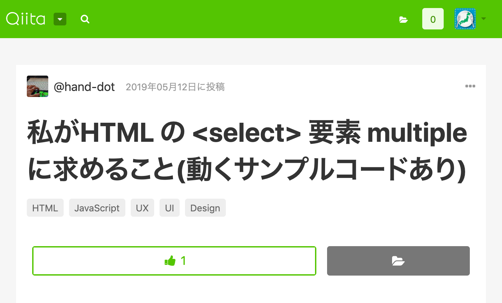

きっかけは @hand-dot さんの記事

<select multiple> と <select>
モバイルでは multiple アリもナシも同じ外観
モバイルでは multiple アリもナシも同じ外観
<select multiple> の問題点
<select multiple> の問題点
- 見た目がモバイルと PC とで異なる
（要素の高さが異なるのでレイアウトが崩れる）
- PC での [Ctrl or Cmd + クリック] わずらわしい
PC の <select multiple> を
ドロップダウンにできないかな？
できればスタイルシートだけで
専用の div でラップするのもナシで
Chrome でやってみました。
（少なくともやろうとしてみました。）
まずは見た目を単数選択の select に合わせます。
見た目を単数選択の select に合わせる
選択項目数をかぞえる
選択項目数をかぞえる（思ったより簡単だったのでボツ）
選択項目だけを横並びに表示する
選択項目だけを横並びに表示する
項目をカンマ区切りにする
項目をカンマ区切りにする
項目がはみ出ないようにする
項目がはみ出ないようにする（失敗）
overflow が効かないので...
やっぱ appearance: menulist は背景にしよう
項目がはみ出ないようにする
サイズと余白を調整する
項目の背景を透明にする（失敗）
background-color は効かないけど...
項目の背景を白にする
やっぱ白じゃダメだ、透明じゃなきゃ...
option 要素そのものは表示せずに
option の中身だけを表示してみよう
項目の背景を透明にする
ドロップダウン前のクリック項目の選択を抑止する
フォーカス時の高さ調整（ドロップダウンさせる）
未選択項目の背景を白にする
未選択項目の背景を白にする
重なり順序を手前にする
重なり順序を手前にする
選択項目にチェックマークをつける
選択項目にチェックマークをつける
項目クリックの挙動をチェックボックスっぽくする
実はカーソルキーとかスペースキーとかも
ハンドリングが必要だったり...
（今回は気づかなかったことに...）
マウスオーバー項目を強調する
残課題
- <optgroup>
- キーボードハンドリング
- 項目数が多いときドロップダウンの中でスクロールさせたい
- そもそもフォーカスでドロップダウンしてよいものか
- Firefox 対応
- Safari 対応
- InternetE...（震え声）
所感
所感
- <select> のカスタマイズはむずかしい
- ShadowDOM さわれないし attachShadow もできない
- Firefox だと ::before すら使えず手も足も出ない
- display: contents の使いどころを知った